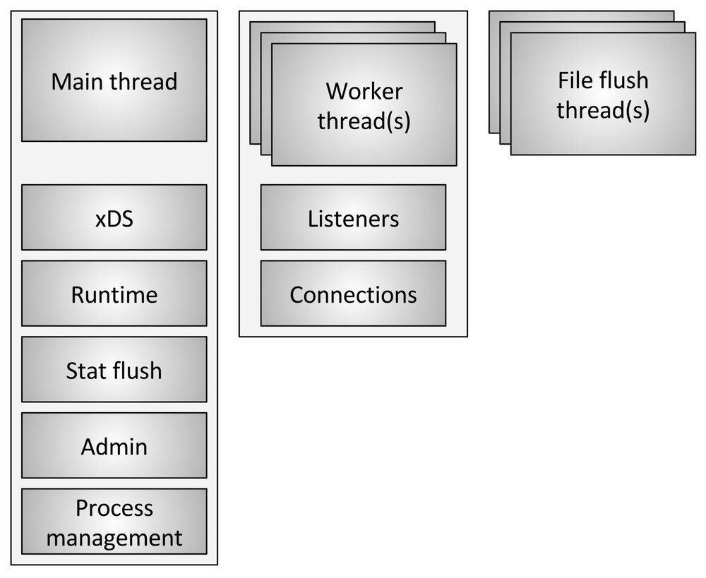
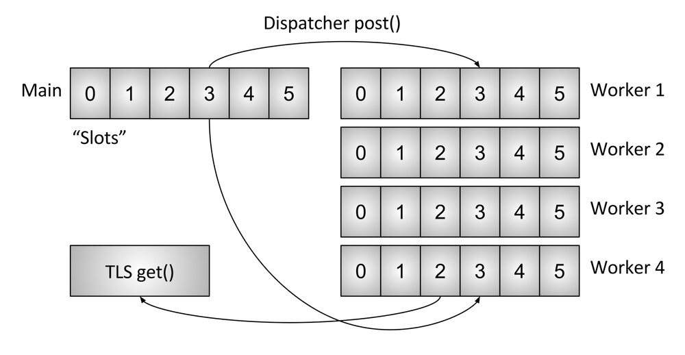
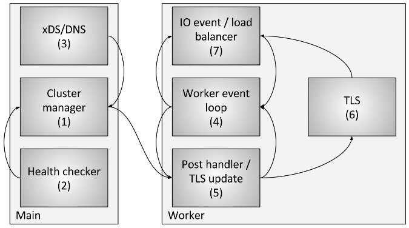

本文为翻译文章，点击查看原文。
编者注：原文于 2017 年 7 月 30 日发布于 Envoy 博客上。
关于 Envoy 代码库的底层技术文档目前相当稀少。 为了纠正这个问题，我打算做一系列关于各种子系统的博客文章。 由于这是第一篇文章，请让我知道您的想法以及您希望了解的其他主题。
我经常看到的关于 Envoy 的最常见技术问题之一就是要求从底层描述 Envoy 使用的线程模型。这篇文章将介绍 Envoy 如何将连接映射到线程，以及内部使用的线程本地存储（TLS）系统的描述，以使代码极其并行且性能更高。
线程模型概览

Envoy 使用三种不同类型的线程，如上图所示。
- Main：此线程负责服务器启动和关闭，所有 xDS API 处理（包括 DNS，运行状况检查 和常规 集群管理），运行时，统计刷新，管理和一般进程管理（信号，热启动 等）。 在此线程上发生的所有事情都是异步的并且是 “非阻塞的”。通常，主线程协调所有不需要大量 CPU 来完成的关键过程功能。 这允许将大多数管理代码编写为单线程编写。
- Worker：默认情况下，Envoy 为系统中的每个硬件线程生成一个工作线程。（这可以通过 –concurrency 选项 控制）。 每个工作线程运行一个 “非阻塞” 事件循环，负责监听每个监听器（当前没有监听器分片），接受新连接，为连接实例化过滤器堆栈，以及处理所有 IO 的生命周期。 连接。 同样，这允许将大多数连接处理代码写成好像是单线程的。
- 文件刷新器：Envoy 写入的每个文件（主要是访问日志）当前都有一个独立的阻塞刷新线程。 这是因为即使使用 O_NONBLOCK 写入文件系统缓存文件有时也会阻塞（哎）。 当工作线程需要写入文件时，数据实际上被移入内存缓冲区，最终通过文件刷新线程刷新。 这是代码的一个区域，技术上所有 worker 都可以阻止同一个锁尝试填充内存缓冲区。 还有一些其他的将在下面进一步讨论。
连接处理
如上所述，所有工作线程都会在没有任何分片的情况下监听所有监听器。 因此，内核用于智能地将接受的套接字分派给工作线程。 现代内核一般都很擅长这个；他们使用诸如 IO 优先级提升之类的功能来尝试填充线程的工作，然后开始使用同时监听同一套接字的其他线程，以及不使用单个自旋锁来处理每个接受。
一旦连接被 worker 接受，它就永远不会离开那个 worker。 所有进一步的连接处理都在工作线程内完全处理，包括任何转发行为。这有一些重要的含义：
- Envoy 中的所有连接池都是每个工作线程。 因此，尽管 HTTP / 2 连接池一次只与每个上游主机建立一个连接，但如果有四个工作站，则每个上游主机在稳定状态下将有四个 HTTP/2 连接。
- Envoy 以这种方式工作的原因是因为通过将所有代码保存在单个工作线程中，几乎所有代码都可以在没有锁的情况下编写，就像它是单线程一样。 这种设计使得大多数代码更易于编写，并且可以非常好地扩展到几乎无限数量的 worker。
- 然而，一个主要的问题是，从内存和连接池效率的角度来看，调整并发选项实际上非常重要。 拥有比所需更多的 worker 将浪费内存，创建更多空闲连接，并导致更低的连接池命中率。 在 Lyft，我们的 sidecar Envoy 以非常低的并发性运行，因此性能大致与他们旁边的服务相匹配。 我们只以最大并发性运行我们的边缘 Envoy。
什么是非阻塞
到目前为止，在讨论主线程和工作线程如何操作时，已经多次使用术语 “非阻塞”。 所有代码都是在假设没有任何阻塞的情况下编写的。 然而，这并不完全正确（完全是这样的吗？）。 Envoy 确实采用了一些进程宽锁：
- 如前所述，如果正在写入访问日志，则所有工作程序在填充内存访问日志缓冲区之前都会获取相同的锁。 锁定保持时间应该非常低，但是这种锁可以在高并发性和高吞吐量下竞争。
- Envoy 采用了一个非常复杂的系统来处理线程本地的统计数据。 这将是一个单独的帖子的主题。 但是，我将简要提一下，作为线程本地统计处理的一部分，有时需要获取对中央 “stat store” 的锁定。这种锁定不应该高度争用。
- 主线程需要定期与所有工作线程协调。 这是通过从主线程 “发布” 到工作线程（有时从工作线程返回到主线程）来完成的。 发布需要锁定，以便将发布的消息放入队列中以便以后发送。 这些锁永远不应该高度争用，但它们仍然可以在技术上阻止。
- 当 Envoy 将自己记录到标准错误时，它会获取进程范围的锁定。 一般来说，Envoy 本地记录被认为是表现糟糕的，所以没有多少考虑改善这一点。
- 还有一些其他随机锁，但它们都不在性能关键路径中，永远不应该争用。
线程本地存储
由于 Envoy 将主线程职责与工作线程职责分开，因此需要在主线程上完成复杂处理，然后以高度并发的方式使每个工作线程可用。 本节介绍了 Envoy 的高级线程本地存储（TLS）系统。 在下一节中，我将描述如何使用它来处理集群管理。

如已经描述的那样，主线程基本上处理 Envoy 过程中的所有管理 / 控制平面功能。 （控制平面在这里有点过载但是当在 Envoy 进程中考虑并与工人做的转发进行比较时，似乎是合适的）。 主线程进程执行某些工作是一种常见模式，然后需要使用该工作的结果更新每个工作线程，并且工作线程不需要在每次访问时获取锁定。
Envoy 的 TLS 系统的工作原理如下：
- 在主线程上运行的代码可以分配进程范围的 TLS 槽。 虽然是抽象的，但实际上，这是一个允许 O（1）访问的向量索引。
- 主线程可以将任意数据设置到其槽中。 完成此操作后，数据将作为正常事件循环事件发布到每个工作程序中。
- 工作线程可以从其 TLS 槽读取，并将检索那里可用的任何线程本地数据。
虽然非常简单，但这是一个非常强大的范例，与 RCU 锁定概念非常相似。 （实质上，工作线程在工作时从不会看到 TLS 插槽中的数据发生任何变化。更改只发生在工作事件之间的静止期间）。 Envoy 以两种不同的方式使用它：
- 通过在没有任何锁定的情况下访问每个 worker 存储不同的数据
- 通过将共享指针存储到每个 worker 的只读全局数据。 因此，每个工作者都具有对在工作时不能递减的数据的引用计数。 只有当所有 worker 都已停顿并加载新的共享数据时，旧数据才会被销毁。 这与 RCU 相同。
集群线程更新
在本节中，我将描述 TLS 如何用于集群管理。 集群管理包括 xDS API 处理和 / 或 DNS 以及运行状况检查。

上图显示了涉及以下组件和步骤的总体流程：
- 集群管理器是 Envoy 内部的组件，用于管理所有已知的上游集群，CDS API，SDS / EDS API，DNS 和活动（带外）运行状况检查。 它负责创建每个上游集群的最终一致视图，其中包括已发现的主机以及运行状况。
- 运行状况检查程序执行活动运行状况检查，并将运行状况更改报告回集群管理器。
- 执行 CDS / SDS / EDS / DNS 以确定集群成员资格。 状态更改将报告回集群管理器。
- 每个工作线程都在不断运行事件循环。
- 当集群管理器确定集群的状态已更改时，它会创建集群状态的新只读快照，并将其发布到每个工作线程。
- 在下一个静止期间，工作线程将更新分配的 TLS 插槽中的快照。
- 在需要确定要负载均衡的主机的 IO 事件期间，负载均衡器将在 TLS 插槽中查询主机信息。 没有获得锁定来执行此操作。 （另请注意，TLS 还可以在更新时触发事件，以便负载平衡器和其他组件可以重新计算高速缓存，数据结构等。这超出了本文的范围，但在代码中的各个位置使用）。
通过使用先前描述的过程，Envoy 能够处理每个请求而不需要任何锁定（除了之前描述的那些）。 除了 TLS 代码本身的复杂性之外，大多数代码都不需要理解线程如何工作，并且可以编写为单线程。 这使得大多数代码更容易编写，并产生出色的性能。
其他使用 TLS 的子系统
TLS 和 RCU 在 Envoy 中广泛使用。 其他一些例子包括：
- 运行时（功能标志）覆盖查找：在主线程上计算当前功能标志覆盖映射。 然后使用 RCU 语义为每个工作程序提供只读快照。
- 路由表交换：对于 RDS 提供的路由表，路由表在主线程上实例化。 然后使用 RCU 语义为每个工作程序提供只读快照。 这使得路由表交换有效地原子化。
- HTTP 日期标头缓存：事实证明，在每个请求上计算 HTTP 日期标头（当每个核心执行～25K + RPS 时）非常昂贵。 Envoy 大约每半秒计算一次日期标题，并通过 TLS 和 RCU 将其提供给每个 worker 。
还有其他情况，但前面的例子应该提供 TLS 所用事物的良好品味。
已知的性能陷阱
虽然 Envoy 整体表现相当不错，但是当它以非常高的并发性和吞吐量使用时，有一些已知领域需要注意：
- 正如本文中已经描述的那样，当前所有工作者在写入访问日志的内存缓冲区时都会获得锁定。 在高并发性和高吞吐量的情况下，当写入最终文件时，将需要以按顺序交付为代价对每个 worker 批量访问日志进行批处理。 或者，访问日志可以成为每个工作线程。
- 尽管统计信息已经过非常优化，但在非常高的并发性和吞吐量下，个别统计信息可能存在原子争用。 对此的解决方案是每个工人计数器，定期冲洗到中央计数器。 这将在后续文章中讨论。
- 如果 Envoy 部署在几乎没有需要大量资源来处理的连接的场景中，现有架构将无法正常运行。 这是因为无法保证连接在 worker 之间均匀分布。 这可以通过实现工作者连接平衡来解决，其中 worker 能够将连接转发给另一个 worker 进行处理。
结论
Envoy 的线程模型旨在支持编程的简单性和大规模并行性，但如果调整不当可能会浪费内存和连接使用。 该模型允许它在非常高的 worker 数量和吞吐量下表现良好。
正如我在 Twitter 上简要提到的那样，该设计也适合在 DPDK 之类的完整用户模式网络堆栈上运行，这可能导致商用服务器在执行完整的 L7 处理时每秒处理数百万个请求。看看未来几年建成什么会非常有趣。
最后一个快速评论：我多次被问到为什么我们为 Envoy 选择 C++。 原因仍然是它仍然是唯一广泛部署的生产级语言，使用该语言中可以构建本文中描述的架构。 C++ 当然不适合所有项目，甚至许多项目，但对于某些用例，它仍然是完成工作的唯一工具。